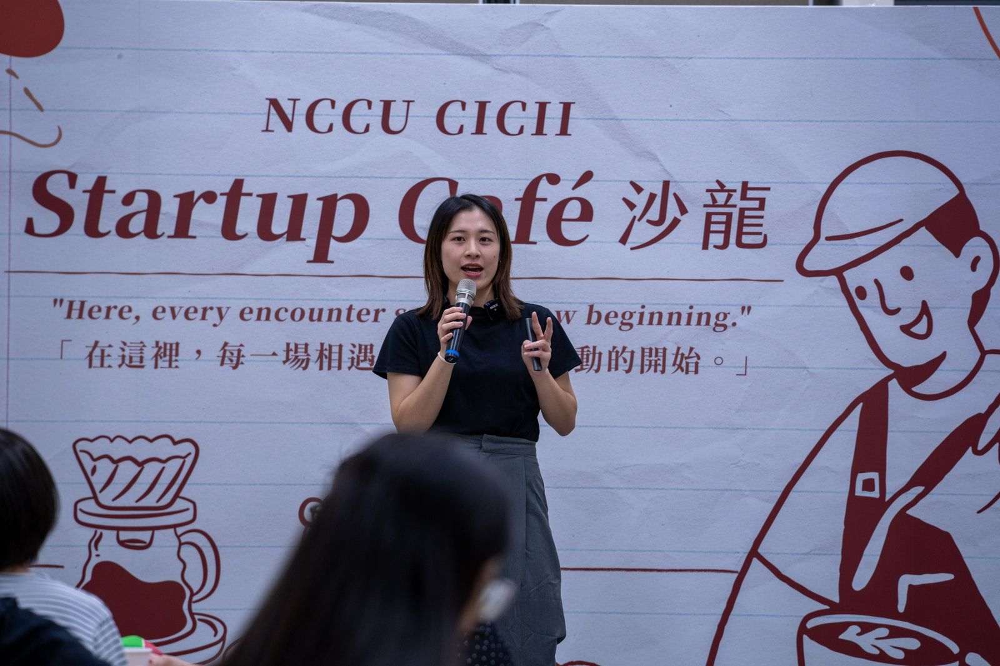

從什麼是 LLM？
AI Prompt 怎麼下才對？
從「文字接龍」講起，讓聽眾理解大型語言模型怎麼生成文字；接著示範怎麼和 AI 一來一往討論出好的 Prompt，最後用 Vibe Coding 把想法做成一個網頁。
AI 教育講師 · 「呆一布 AI」負責人
我是易妏 Evan，帶領「呆一布 AI」教學團隊與 YouTube 頻道。從國小學生到大學生、社會人士，我用生活化的例子講解生成式 AI 的原理，再帶大家動手和 AI 協作。
近千人 選修
擔任生成式 AI 課程的課程總監，每學期全國修課人數（政大校內約 260 人）
2,000+
人次參與我主辦的 AI 講座與工作坊
3.6 萬+
次 YouTube「呆一布 AI」頻道總觀看（1,280 位訂閱）
全齡
從國小學生到社會人士都教過
TALKS & WORKSHOPS

從「文字接龍」講起，讓聽眾理解大型語言模型怎麼生成文字；接著示範怎麼和 AI 一來一往討論出好的 Prompt，最後用 Vibe Coding 把想法做成一個網頁。
自己越強，
AI 就越強。
帶國小到國中的孩子認識生成式 AI 怎麼「理解」一句話，練習請 AI 反問、給選項，再用 Gemini 生圖、Canva 排版。孩子最後要說出自己保留什麼、修改什麼，以及為什麼。
YOUTUBE · 呆一布 AI
EXPERIENCE
學歷 國立臺北大學 社會工作學系、經濟學系雙主修（2018 – 2023）
臺北市立第一女子高級中學（2015 – 2018）